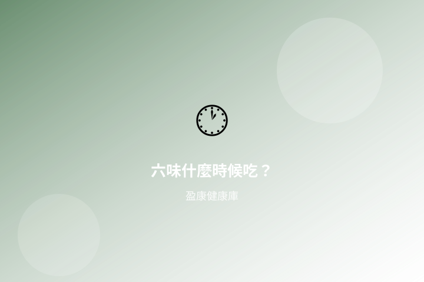

六味地黃丸什麼時候吃？餐前餐後怎麼看說明

搜尋「六味地黃丸什麼時候吃」「餐前還是餐後」時，多數人想先搞清楚：說明書哪一欄寫食用時間、一日幾次、什麼情況不宜自行進補。以下以「怎麼看說明」為主軸整理；產品提及僅供規格對照，並非療效宣稱。
1. 答案在標籤：「食用方法」欄優先
何時吃、一次幾粒、一日幾次，應以包裝或說明書的「食用方法／用法用量」為準，而非網路經驗文或標題關鍵字。若標籤寫「飯後」或「溫開水送服」等，即依該欄執行；不同品牌、不同包裝的敘述可能略有差異，勿把一篇文章的建議套用到所有產品。
- 先找「食用方法」「建議對象」「注意事項／禁忌」三欄。
- 粒數（例如 350 粒）只反映包裝量，不代表「一次要吃很多」或「更強效」。
- 漏服時勿自行加倍；以標籤或專業人士指示為準。
2. 餐前餐後：為什麼說明會這樣寫
部分口服建議飯後，是為減少空腹刺激或不適感；亦有產品依配方傳統寫定時服用。重點不是「網友說餐前比較好」，而是你手上這盒的標示。若同時服用其他藥物或保健品，時間是否需錯開，應詢問藥劑師或中醫師，避免自行合併。
盈康小提示：讀說明時自問三句——「一次幾粒？」「一日幾次、何時？」「什麼人／情況不要吃？」三句都能在包裝上找到對應，再決定是否適合自己的日常節奏。
3. 日常節奏與何時求診
六味地黃丸常出現在「滋陰補腎」相關搜尋，但並非人人適合、亦不能取代診斷。若有持續不適、不明原因疲勞、或標籤所列不宜對象，應先專業評估。想進一步了解「適合誰、標籤怎麼讀」，可一併參考相關說明文。
想對照規格與食用方法，可先瀏覽六味地黃丸 350粒，或到所有產品查看口服系列。亦可讀六味地黃丸適合誰？。
推薦產品

六味地黃丸 350粒
日常口服輕養生，可先瀏覽規格與食用方法。
瀏覽產品詳情 →